Ontwerpen
10 tips om efficiënter te werken
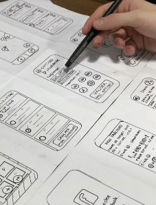
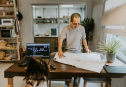
Tien principes van effectieve wireframes
"Dear architects, it’s time for a system change"
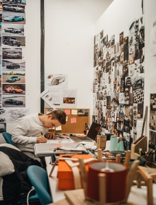
Design thinking voor communicatie
Kan gebruiksvriendelijk design wel creatief zijn?
Quote
Sem de Vries, 2022
Abonneer op onze nieuwsbrief
Your email address
Subscribe
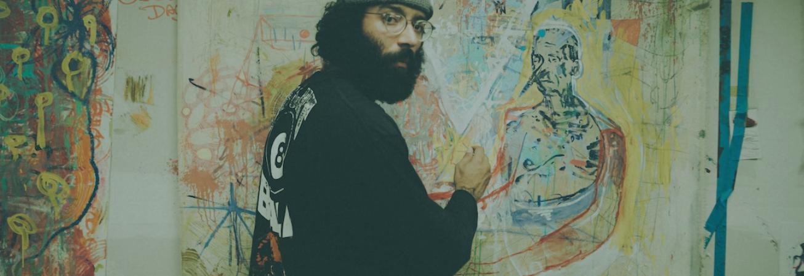
KUNST
Creatief denken kan iedereen
Vernieuwend denken is niet alleen weggelegd voor echte creatievelingen. Iedereen kan verrassend uit de hoek komen.
KUNST
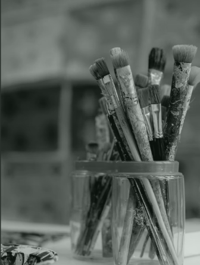Gruwelijke meesterwerken in de kunstgeschiedenis
KUNST
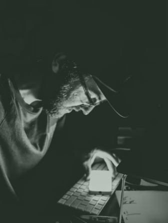De excuustruus der creatievelingen
KUNST
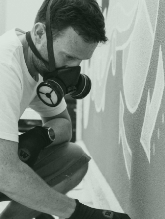Graffiti: crimineel of creatief?
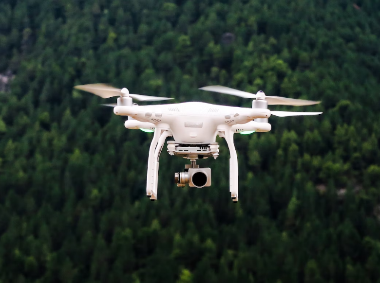
TECHNOLOGIE
Meeuwen inspireren dronebouwers
Dankzij miljoenen jaren evolutie kunnen meeuwen met een simpele beweging verschillende vleugelstanden aannemen.
TECHNOLOGIE
Offline, als je durft
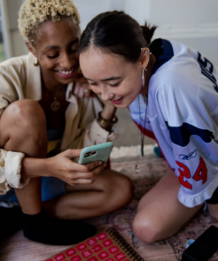
TECHNOLOGIE
Even goede vrienden online
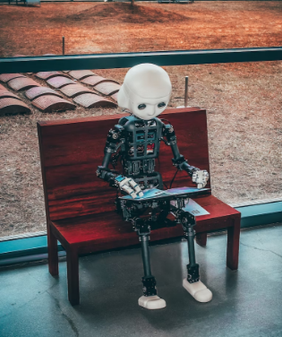
TECHNOLOGIE
'Robot' blijkt man in pak
ETHIEK
Welk belang heeft kind bij vader die moeder wordt?
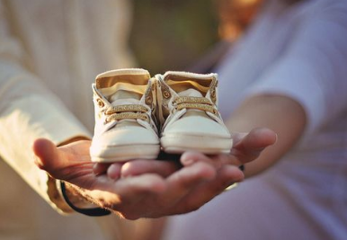ETHIEK
Hooggerechtshof worstelt met dierenwelzijn
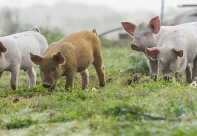ETHIEK